Harmonized Landsat and Sentinal
About HLS
Tutorial
Overview
Today we are going to look at changes in vegetation greenness on the san Francisco peaks at the onset of fall and see if we can see a reduction of greenness as aspen start changing colors on the peaks.
We will look at Granule T12SVE for three dates:
- 2019 Sept 30 - HLS.S30 Sentinal 2A/2B- Julian Day 2019273
- 2019 October 5 - HLS.S30 Sentinal 2A/2B - Julian Day 2019278 (if time)
- 2019 October 9 - HLS.L30 Landsat 8/9- Julian Day 2019282
Step 1. Load First granule
First we will load the granule HLS.S30.T12SVE.2019273T181139.v2.0.B* looking the Flagstaff Area on September 30th 2019
Open ENVI 6.0
Once ENVI is Open, click File > Open As > Generic Formats > TIFF
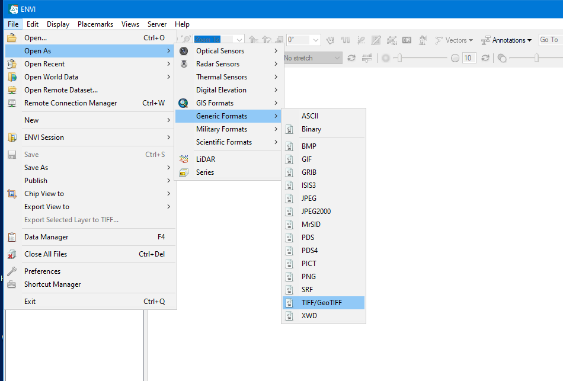
- Navigate to the dataset and open the following file:
Data Location: SOME_PATH/HLS/FallColorPeaks/JD2019273_20190930
Filenames: HLS.S30.T12SVE.2019273T181139.v2.0.B01 through HLS.S30.T12SVE.2019273T181139.v2.0.B12
- Select the bands B01 - B12 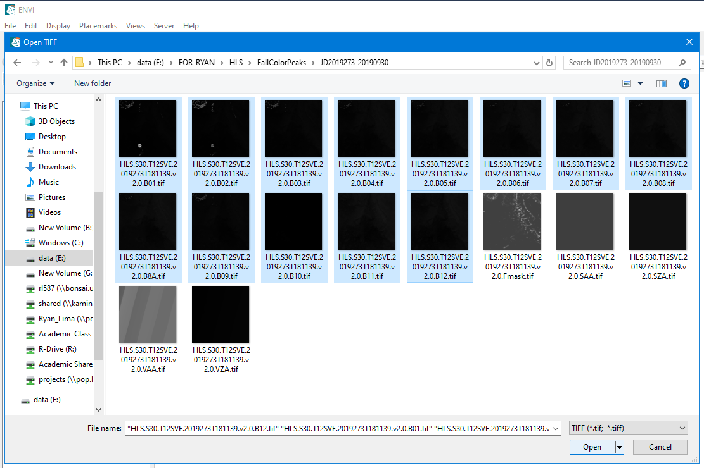
Step 2. Build Band Stack
- In the toolbox pane on the right side of the screen, in the search bar type “band stack”
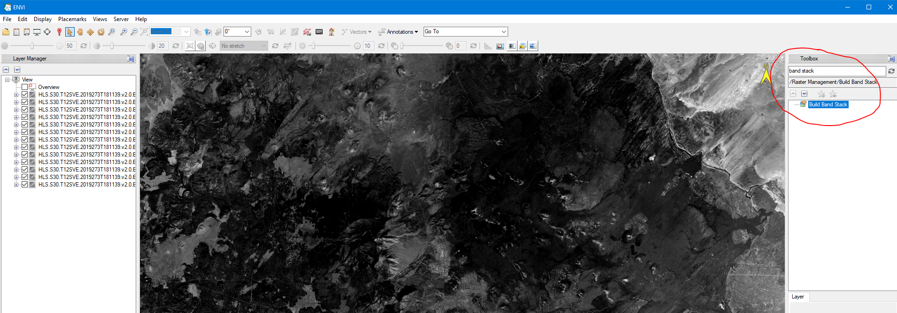
Double click on “Build Band Stack” tool
When it opens click on the elipse (…) icon next to the Input Rasters box
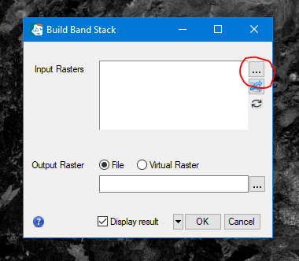
- with your bands loaded from the previous step you should be able to his Select All, or highlight bands B12 - B01 if you have loaded additional images into ENVI previously
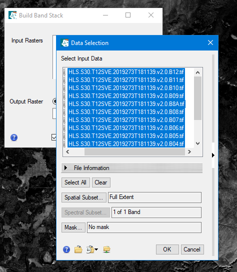
Click OK
Now you will want to re-sort the images so they are ordered from smallest to largest band number. Click on the Icon beneath the elipse that shows two blue crossing arrows to sort the bands
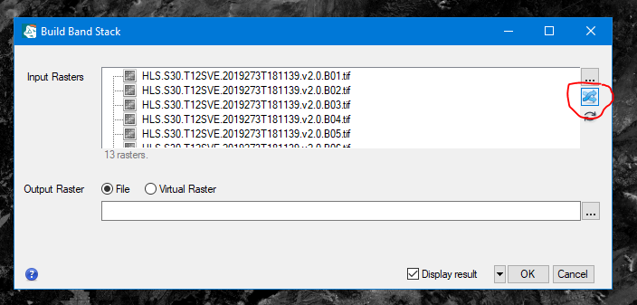
Next click the elipse (…) icone next to the output raster box, to select a directory to save the band stack and name the output file
pick a place that makes sense to save the band stack. I created a directory in the FallColorPeaks directory called Stacks
Name your file someting descriptive like: HLS.S30.T12SVE_20190930_273_band_stack then click save
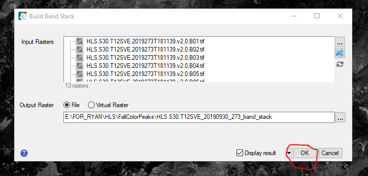
Notice I included the date in the format I recognize and the Julian date to avoid confusion later on
- Click Ok to load and save the band stack
You should now see the band stack loaded though its probably some false color since by default it just loads the first three bands
Step 3. Edit Header File (names and wavelengths)
Note we are working with the S30 data so there are different bands than the L30 data, this is important when editing the header file
- In the toobox search bar type “edit header”, and then double click on the Edit ENVI Header tool.

- When the Data Selection window pops up, choose the band stack and click OK
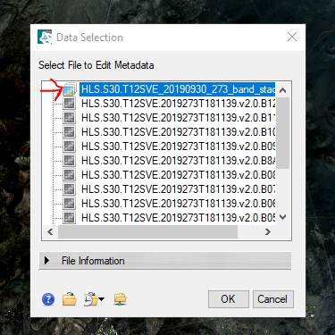
Change the band names
- In the display tab of the Edit ENVI Header window, click on the Bands one at a time and re-name them one at a time
Band 1(Coastal_Aerosol:HLS.S30.T12SVE.2019273T181139.v2.0.B01.tif) = B01 Coastal Aerosol
Band 2(Blue:HLS.S30.T12SVE.2019273T181139.v2.0.B02.tif) = B02 Blue
Band 3 (Green:HLS.S30.T12SVE.2019273T181139.v2.0.B03.tif) = B03 Green
Band 4 (Red:HLS.S30.T12SVE.2019273T181139.v2.0.B04.tif) = B04 Red
Band 5 (Red_Edge1:HLS.S30.T12SVE.2019273T181139.v2.0.B05.tif) = B05 Red Edge 1
Band 6 (Red_Edge2:HLS.S30.T12SVE.2019273T181139.v2.0.B06.tif) = B06 Red Edge 2
Band 7 (Red_Edge3:HLS.S30.T12SVE.2019273T181139.v2.0.B07.tif) = B07 Red Edge 3
Band 8 (NIR_Broad:HLS.S30.T12SVE.2019273T181139.v2.0.B08.tif) = B08 NIR Broad
Band 9 (Water_Vapor:HLS.S30.T12SVE.2019273T181139.v2.0.B09.tif) = B09 Water Vapor
Band 10 (Cirrus:HLS.S30.T12SVE.2019273T181139.v2.0.B10.tif) = B10 Cirrus
Band 11 (SWIR1:HLS.S30.T12SVE.2019273T181139.v2.0.B11.tif) = B11 SWIR 1
Band 12 (SWIR2:HLS.S30.T12SVE.2019273T181139.v2.0.B12.tif) = B12 SWIR 2
Band 13 (NIR_Narrow:HLS.S30.T12SVE.2019273T181139.v2.0.B8A.tif) = B8A NIR Narrow
Note: Band 13 is band 8A
When you are finished renaming click OK, then re-open the Edit ENVI Header tool.
Again select the stack, but this time go to the spectral tab. It should be empty. Click the Add (+) button.
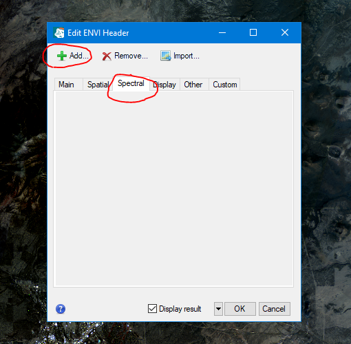
- In the Add Metadata Items window, scroll down and select Wavelength and Wavelength Units then click OK
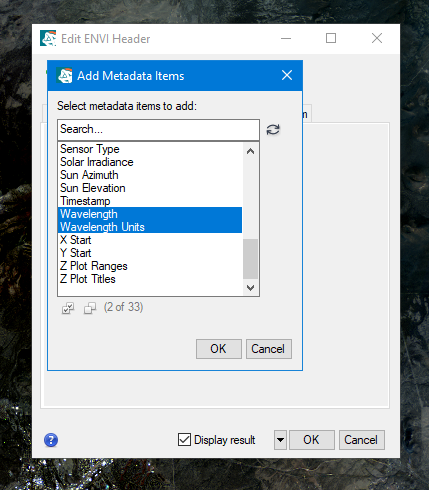
- Change the wavelength units to Micrometers
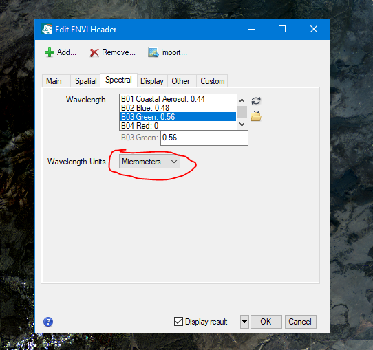
- Then one-by-one edit the bands to match the table below:
| HLS Band Code Name S30 | Wavelength (Micrometers) | Band |
|---|---|---|
| B01 | 0.44 | Coastal Aerosol |
| B02 | 0.48 | Blue |
| B03 | 0.56 | Green |
| B04 | 0.655 | Red |
| B05 | 0.7 | Red-Edge 1 |
| B06 | 0.74 | Red-Edge 2 |
| B07 | 0.79 | Red-Edge 3 |
| B08 | 0.83 | NIR Broad |
| B09 | 0.94 | Water Vapor |
| B10 | 1.37 | Cirrus |
| B11 | 1.61 | SWIR 1 |
| B12 | 2.2 | SWIR 2 |
| B8A | 0.865 | NIR Narrow |
Step 4. Display the Image in True-Color RGB (optional)
- With your band stsack highlighted in the layer manager tab, click on the data manager (clip board) icon on the toolbar at the top
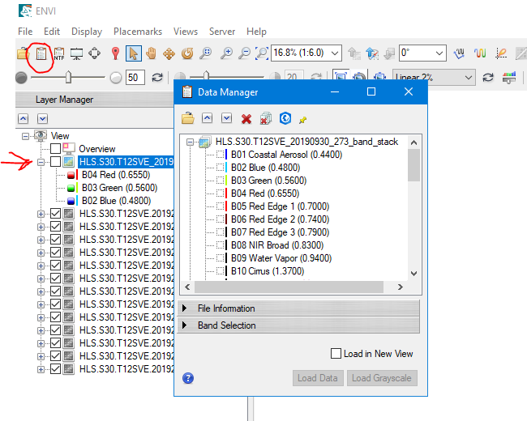
- Click to expand the Band Selection section in the Data Manager Window, then click on the Red, Green, and Blue Bands in order.
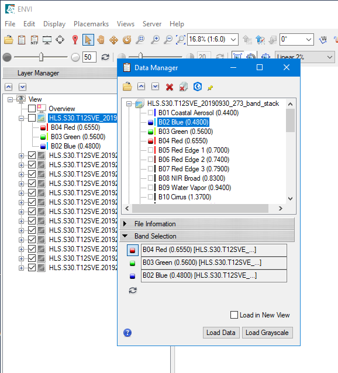
Once the proper bands are selected, hit the Load Data button
(optional) you can try changing how the data is displayed by switching from 2% linear to Gaussian or others, you can also adjust the brightness and contrast
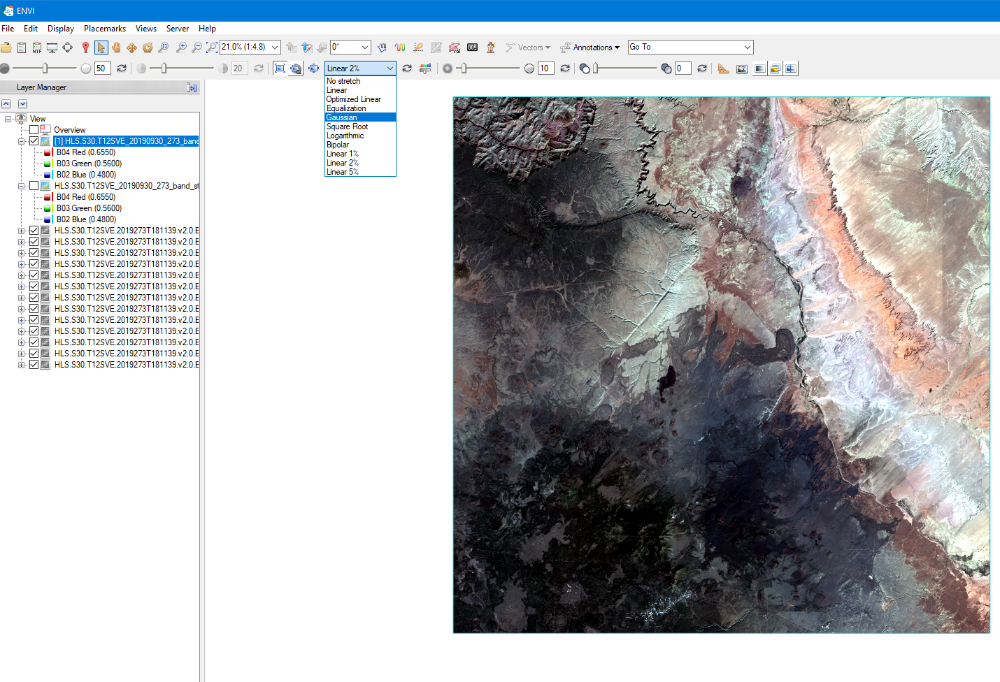
Step 5. Calculate EVI - Enhanced Vegetation Index using Built-in ENVI tools
We can calculate EVI with bandmath, but we don’t actually have to, ENVI has a built in tool for this and it works well if you have edited your header file correctly.
- In the toolbox search bar type ‘vegetation’ and then double click on the Vegetation Index Calculator tool.
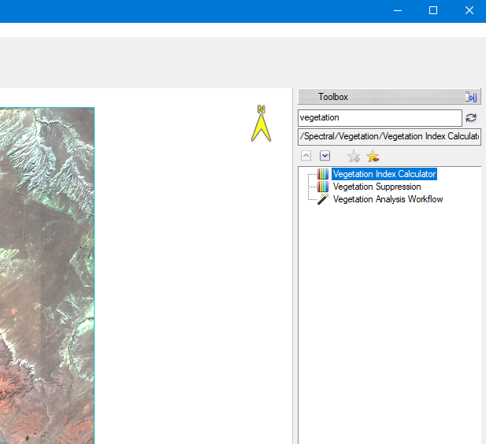
- Select your band stack from the Vegetation Indices Input File window

Select Enhanced Vegetation Index (Broadband Greenness)
Specify an output location. I made a directory called EVI then named the file: EVI_HLS.S30.T12SVE.20190930_273
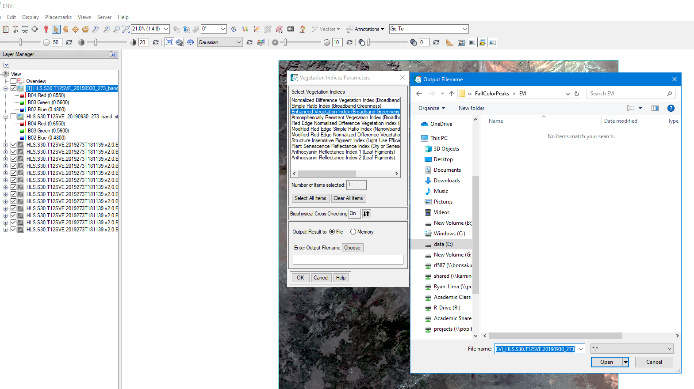
- Click OK to load and display the EVI layer
Step 6. Repeat steps 1 - 5 for L30 granule HLS.L30.T12SVE.2019282T180335.v2.0
NOTE THE BANDS ARE SLIGHTLY DIFFERENT SO CHANGE THE NAMES AND WAVELENGTHS AS SHOWN BELOW
Rename L30 bands Edit Header File
Band 1(Coastal_Aerosol:HLS.L30.T12SVE.2019282T180335.v2.0.B01.tif) = B01 Coastal Aerosol
Band 2(Blue:HLS.L30.T12SVE.2019282T180335.v2.0.B02.tif) = B02 Blue
Band 3(Green:HLS.L30.T12SVE.2019282T180335.v2.0.B03.tif) = B03 Green
Band 4(Red:HLS.L30.T12SVE.2019282T180335.v2.0.B04.tif) = B04 Red
Band 5(NIR:HLS.L30.T12SVE.2019282T180335.v2.0.B05.tif) = B05 NIR
Band 6(SWIR1:HLS.L30.T12SVE.2019282T180335.v2.0.B06.tif) = B06 SWIR 1
Band 7(SWIR2:HLS.L30.T12SVE.2019282T180335.v2.0.B07.tif) = B07 SWIR 2
NO BAND 8
Band 8(Cirrus:HLS.L30.T12SVE.2019282T180335.v2.0.B09.tif) = B09 Cirrus
Band 9(TIRS1:HLS.L30.T12SVE.2019282T180335.v2.0.B10.tif) = B10 TIRS1
Band 10(TIRS2:HLS.L30.T12SVE.2019282T180335.v2.0.B11.tif) = B11 TIRS2
Change Wavelengths Edit Header File
| HLS Band Code Name L30 | Wavelength (micrometers) | Band |
|---|---|---|
| band01 | 0.44 | Coastal Aerosol |
| band02 | 0.48 | Blue |
| band03 | 0.56 | Green |
| band04 | 0.655 | Red |
| - | 0.7 | Red-Edge 1 |
| - | 0.74 | Red-Edge 2 |
| - | 0.79 | Red-Edge 3 |
| - | 0.83 | NIR Broad |
| band05 | 0.865 | NIR Narrow |
| band06 | 1.61 | SWIR 1 |
| band07 | 2.2 | SWIR 2 |
| - | 0.94 | Water Vapor |
| band09 | 1.37 | Cirrus |
| band10 | 10.895 | Thermal Infrared 1 |
| band11 | 12.005 | Thermal Infrared 2 |
Step 7. With Both EVI layers open, lets change the color scheme
Right click on one of your EVI layers
Select Change Color Table
Choose a color scheme you like, I hit More and selected Rainbow (or whatever you want)

- Toggle the layers on and off or use the swipe tool at the top to compare the EVI at the two dates
![]
Step 8. (Optional) Use ROI tool to quanitfy differences
I suggest you close and restart ENVI at this point
With ENVI 6.0 ReOpened
Click File > Open
Navigate to the directory you saved the EVI images in
Select One of the EVI image files ending in .HDR and click ok
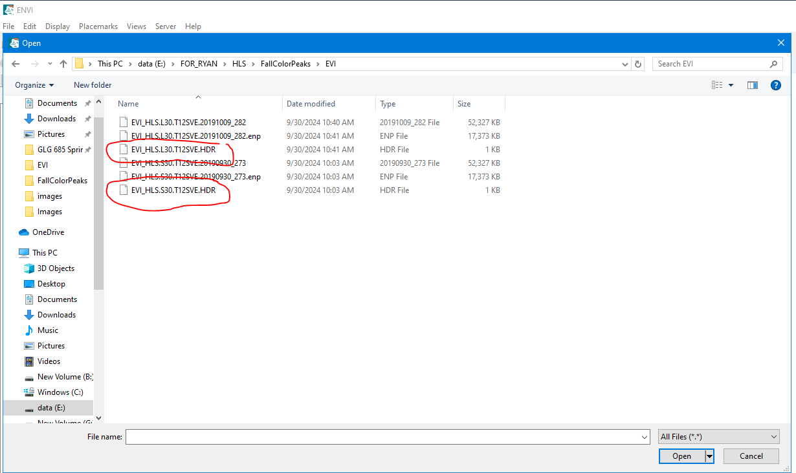
Repeat for the other image (open in new view if you want)
Click on the ROI Icon at the top of the screen
Cick file > Open
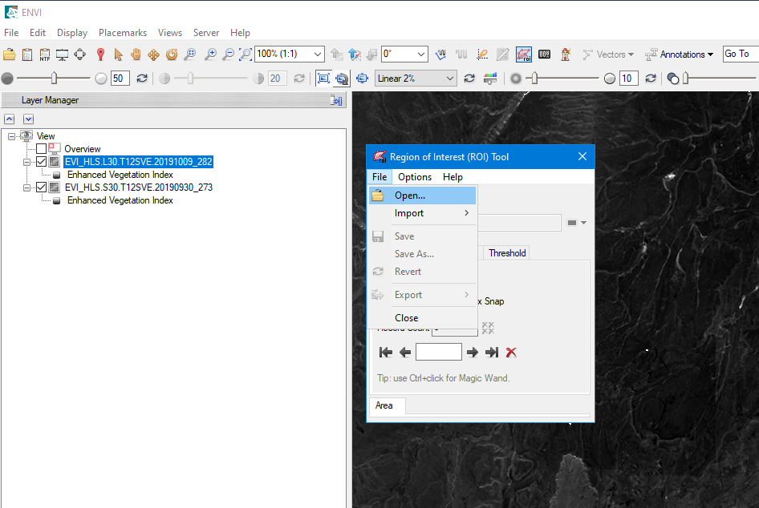
Navigate to the Peaks Fall Colors Directory and click on one of the ROI files ending in .xml, or draw your own and save it
Choose one of the EVI layers to open the ROI on
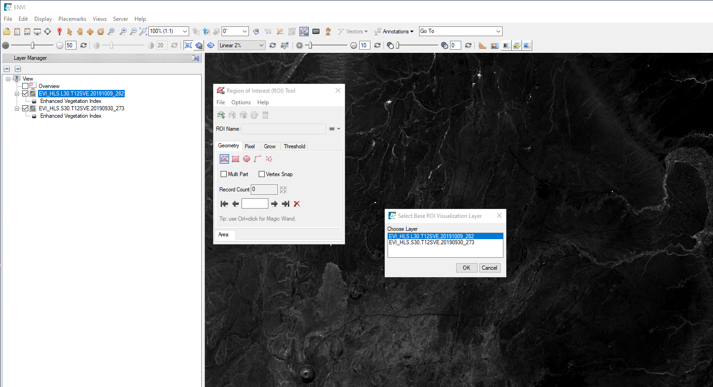
- Once opened, click the calculator button on the ROI tool to calculate stats.
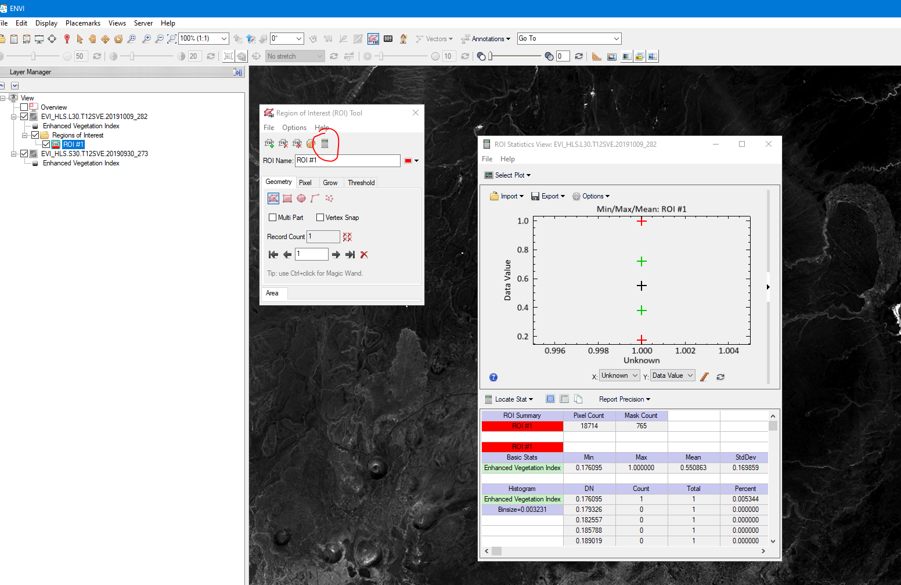
- Select plot Histogram Enhanced Vegetation Index
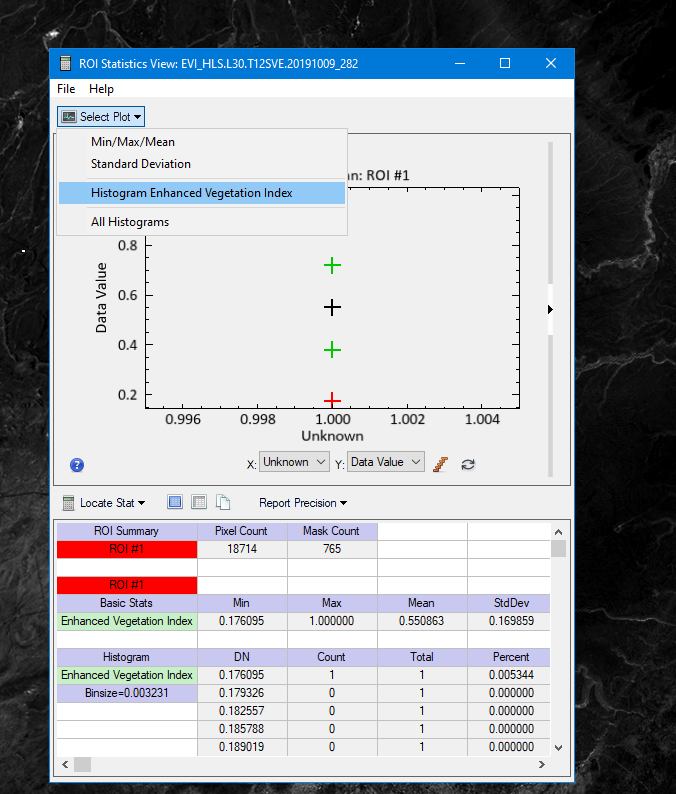
- Repeat for the other EVI image and compare mean values, histogram, and mask count.
Images with values greater than 1 (very high EVI) are masked out by default so higher mask count means higher greenness, EVI is best at looking at marginal changes